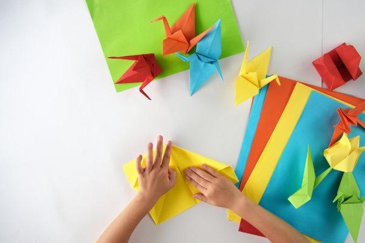
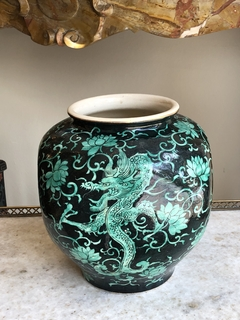
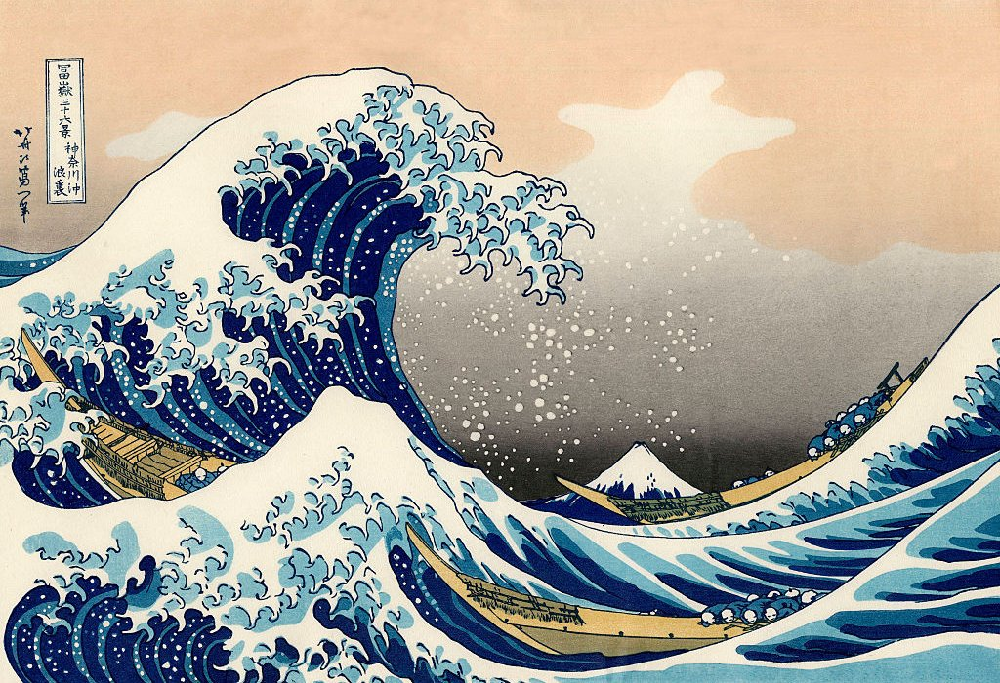
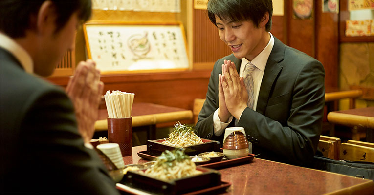
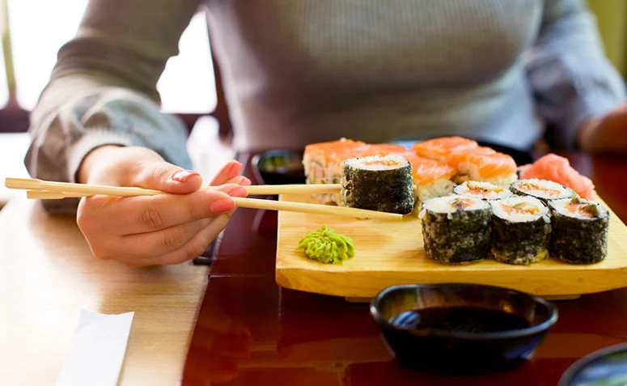

Cultura Japonesa
Arte
Manga
O mangá japonês é uma forma de quadrinho ou história em quadrinhos originada no Japão, totalmente reconhecida por seu estilo visual distinto e narrativa rica. Abrange diversos gêneros, como ação, romance, comédia, terror e fantasia, sendo voltados para públicos variados, desde crianças até adultos. Publicado regularmente em revistas antes de ser compilado em volumes, o mangá é lido no sentido tradicional japonês, da direita para a esquerda. Ele desempenha um papel significativo na cultura pop japonesa, influenciando outras mídias, como animes, filmes e jogos.

Origami
O origami é uma arte japonesa de dobrar papel, transformando folhas planas em formas tridimensionais sem o uso de cortes ou cola. Suas raízes estão ligadas à cultura tradicional, sendo usadas em cerimônias religiosas e como símbolo de boas-vindas e sorte. Com o tempo, tornou-se uma prática artística e educativa, desenvolvendo técnicas complexas e modernas. O origami combina simplicidade e criatividade, permitindo a criação de figuras como animais, flores e formas geométricas. Ele também é valorizado como uma atividade terapêutica e uma forma de promoção da paciência.

Ceramica
A cerâmica japonesa é uma das tradições artísticas mais antigas e refinadas do Japão, destacando-se por sua estética simples, funcional e profundamente ligada à natureza. Ela abrange uma ampla variedade de estilos e técnicas, refletindo influências regionais e históricas. Desde objetos importados, como tigelas para chá e pratos, até peças artísticas, a cerâmica japonesa valoriza a imperfeição e a espontaneidade, como no estilo wabi-sabi. Muitas técnicas, como o raku e o esmalte celadon, são mundialmente reconhecidas. A cerâmica também é central na cerimônia do chá e no cotidiano japonês, unindo tradição, espiritualidade e arte prática.

Ukiyo-e
A arte ukiyo-e (浮世絵) é uma das formas mais icônicas da arte tradicional japonesa. O termo "ukiyo" pode ser traduzido como "mundo flutuante" ou "mundo passageiro", e "e" significa "imagem" ou "pintura". Portanto, ukiyo-e significa literalmente "imagens do mundo flutuante", referindo-se à representação da vida cotidiana, especialmente da vida urbana e das experiências efêmeras, como o prazer, o luxo e a diversão da sociedade durante o período Edo (1603-1868) no Japão.
Esporte
Judo
O judô é uma arte marcial japonesa que foi fundada por Jigoro Kano em 1882. O termo "judô" pode ser traduzido como "o caminho suave", referindo-se à filosofia de usar a força do oponente contra ele, ao invés de se opor diretamente à sua força.
Karate
O karatê é uma arte marcial de origem japonesa que se baseia em técnicas de socos, chutes, joelhadas e cotoveladas, além de defesa e contra-ataque. Embora o karatê tenha raízes nas artes marciais tradicionais de Okinawa, ele foi sistematizado no Japão no início do século XX.
Religiao

Xintoismo
O xintoísmo (神道, Shintō) é a religião indígena do Japão, profundamente enraizada na cultura e história do país. Sua palavra é formada por "kami" (deuses ou espíritos) e "dō" (caminho ou doutrina), significando literalmente "o caminho dos deuses". O xintoísmo não tem um fundador específico nem escrituras sagradas como outras religiões, mas é um conjunto de crenças e práticas espirituais que giram em torno da reverência à natureza, aos ancestrais e aos kami.

Budismo
O budismo japonês é uma das principais tradições religiosas no Japão e tem uma história rica, marcada por diversas escolas e práticas. Ele chegou ao Japão por volta do século VI, vindo da China e da Coreia, e se desenvolveu ao longo dos séculos, influenciando profundamente a cultura, a arte e a filosofia do país. O budismo japonês não é monolítico, mas se apresenta em várias escolas com diferentes interpretações e práticas.
Etiqueta

Agradecimentos
"Itadakimasu" e "Gochisosama-deshita" são expressões japonesas utilizadas antes e depois das refeições, respectivamente, para expressar gratidão: Itadakimasu Dita antes de começar a refeição, significa "Estou feliz por receber esta refeição". É uma forma de agradecer a todos que contribuíram para que a comida chegasse à mesa, desde os agricultores até o chef. Geralmente, é dita com as mãos unidas na frente do peito. Gochisosama-deshita Dita depois de terminar a refeição, significa "agradeço por essa refeição". Demonstra gratidão pela comida e pelo trabalho de quem a preparou.

Hashi
Hashi (箸) são os pauzinhos usados como utensílios para comer em diversas culturas asiáticas, sendo especialmente populares no Japão, China, Coreia e Vietnã. No contexto japonês, os hashi são ferramentas essenciais para a alimentação diária e fazem parte de uma tradição cultural rica.